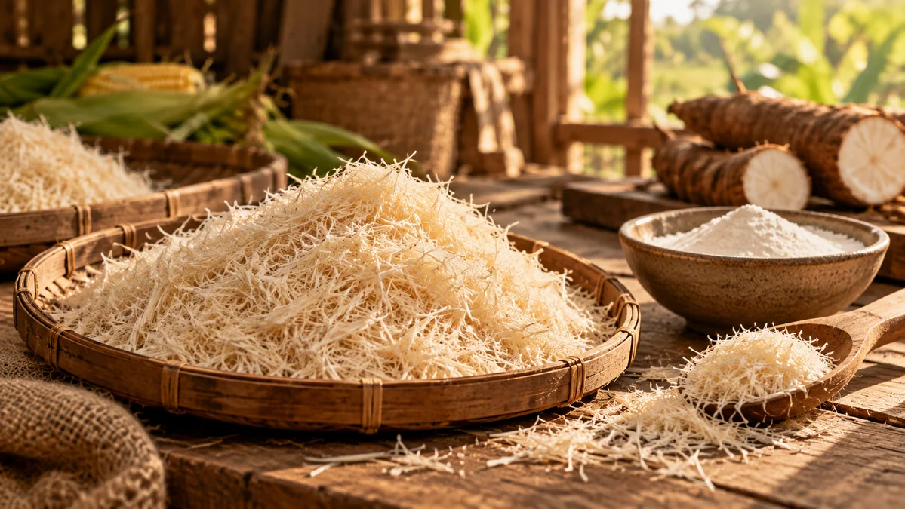
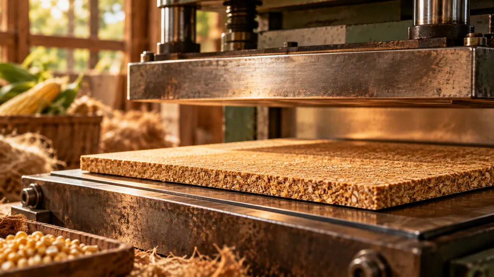
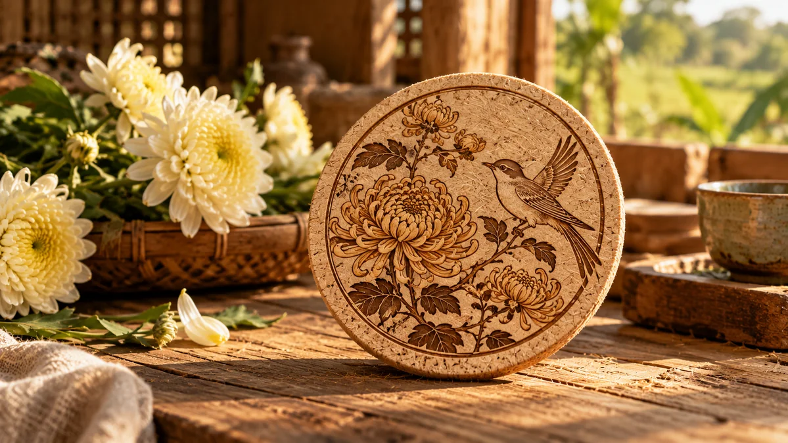

Currently Viewing

Workshop #04 • 86 g Corn Cob
Minh’s CORNESS Coaster
A pressed coaster with royal chrysanthemum motifs, providing safe heat insulation up to 120°C.
Status:
Delivered
#XP-8821

This one-of-a-kind handcrafted coaster is made from 86 g of reclaimed corn cobs collected after the summer–autumn harvest in Dong Nai. Its indigo tones, golden chrysanthemums and Vietnamese ceramic glaze celebrate local folk art.
Completed On
September 22, 2026
Eco Origin
Xuan Phu • Dong Nai
Guiding Artisan
Uncle Ba Thien (K22)
Dried organic corn cob
Naturally sun-dried for 48 hours in Xuan Phu to preserve the cellulose fiber structure.
Post-harvest corn
Collected directly from partner farmers in the cornfields of Dong Nai.
Avoided field-waste emissions
Estimated using ISO 14064 agricultural greenhouse-gas accounting principles for crop residues.
Crafting experience
Minh personally sorted fibers, hand-pressed the mold and engraved motifs alongside local artisans.
Every CORNESS coaster follows a carefully controlled bio-material transformation process while retaining the natural texture of corn fiber.
Harvested in Xuan Phu, Dong Nai. The kernels are used for food, while the fresh cobs are recovered.

Naturally sun-dried and selected for stable, high-density cellulose fibers.

Mechanically milled into uniform 1.5 mm fibers and blended with non-toxic organic cassava-starch binder.

Hydraulically pressed at 15 MPa and 110°C to form a standard 8 mm cork-like surface.

Naturally colored, heat-printed with a Dong Nai chrysanthemum-and-bird motif, then finished with a laser-engraved signature.

Uncle Ba Thien
Wood and corn-fiber artisan • 28 years of experience
 14:15
14:15
Uncle Ba Thien showed Minh how to feel the texture and recognize corn fiber with under 12% moisture.
 15:05
15:05
Minh operated the 15-ton press by hand, watching the corn fiber take the shape of a solid round coaster.
 15:50
15:50
Carefully coloring chrysanthemums and paired phoenixes with traditional indigo and natural brown dyes.
 16:30
16:30
Laser-engraving “Xuan Phu Commune, Dong Nai Province” to identify the original source of the materials.
Museum Certificate of Provenance
Blockchain Lookup Code
Scan to trace the clean-material supply chain back to Dong Nai cornfields.
“Hear how Xuan Phu's corn harvest is transformed into handmade memories, one creation at a time.”
Welcome to CORNESS, a place where the harvest becomes a story. In Xuan Phu, Dong Nai, each corn harvest leaves behind corn cobs that can become a beautiful handmade keepsake.
Recorded at 4:45 PM • September 22, 2026, at Xuan Phu Craft Workshop
“The workshop smelled of sun-dried corn that afternoon. For the first time, I realized that 86 grams of seemingly useless corn cobs could become a surface so smooth and solid.”
“Working beside Uncle Ba Thien, mixing natural indigo and operating the press helped me slow down after busy days in the city. The bird carrying a chrysanthemum sprig felt more than a print—it was a quiet greeting from Dong Nai to my morning cup of tea.”
Contribute to the Xuan Phu Green Fund
10% of workshop proceeds are returned to the local corn farmers' cooperative.
A pressed coaster with royal chrysanthemum motifs, providing safe heat insulation up to 120°C.

Made from 100% unbleached corn-fiber paper with traditional hand-sewn hemp-thread binding.

A warm, softly glowing lampshade, handcrafted from layered corn-husk membranes.
Local Travel & Experience Guide
From ancient forests and misty mountain peaks to lakeside escapes and fruit-filled orchards.
01 · FOREST ADVENTURE
Dong Nai's green treasure. An ideal destination for trekking, forest cycling, birdwatching and guided nighttime wildlife watching, with the option to explore Bau Sau wetlands.
Best time to visit: December – May (dry season).
Best for: Adventure seekers, groups of friends and nature-loving families.
02 · RIVERSIDE FUN
A lively destination for waterside recreation in Dong Nai, perfect for weekend team-building activities and discovering the flavors of southern river cuisine.
Local dishes to try: Clay-pot roast chicken and charcoal-grilled snakehead fish.
Best for: Students, companies and large groups of friends.
03 · MOUNTAIN & SPIRITUAL ESCAPE
Southern Vietnam's second-highest mountain, at 837 m. Climb the temple steps, take the cable car for panoramic views, or visit the revered Buu Quang (Gia Lao) Pagoda.
Must-try experience: Cloud watching and overnight mountain camping.
Best for: Pilgrims and hiking enthusiasts.
04 · WATER-PARK ADVENTURE
Near Bien Hoa, the Amazing Bay water park features a vast artificial beach, powerful wave pools and dozens of thrilling modern water slides.
Highlights: Artificial beach, wave pool and modern waterslides.
Best for: Families with children and groups who enjoy water activities.
05 · LAKESIDE GETAWAY
A wide-open world of water and sky. Leave the city behind to paddleboard at sunrise, fish, enjoy local lake fish and look up at the stars at night.
Recommended activities: Sunset views, campfires, SUP paddling and lakeside stays.
Best for: Young travelers, couples and glamping lovers.
06 · ORCHARD EXPLORATION
Southern Vietnam's fruit-growing heartland. During the May–August harvest, visitors can pick and enjoy rambutan, durian, mangosteen, pomelo and other seasonal specialties.
Fruit season: May–August; ripening dates vary by orchard.
Best for: Families and visitors interested in local culture and food.